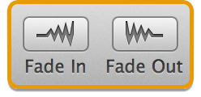
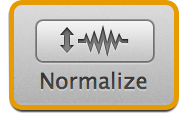

Fades and Volume Adjustments
Fission can fade audio in and out, normalize an entire file, and adjust the gain of a portion of audio.
Fading In or Out
To fade audio, start by selecting the audio you wish to fade. Once a selection is made, click the Fade In or Fade Out buttons to fade the audio across the entire selection.

Fission's Fade Buttons
As well, with the Fade Around Removed Audio option turned on in the Clip menu, you can set Fission to automatically fade around areas where audio has been removed. The duration of these fades can be adjusted in the Preferences window.
Normalizing Audio

Fission's Normalize Button
Normalize increases the gain of the selected audio, so that the loudest sample is at set to the maximum possible value. This makes the selection as loud as possible without causing distortion. To normalize a selection of audio, just highlight the desired audio then click the Normalize button.
Gain Adjustment
Fission's Gain Adjustment Slider
You'll see the Gain Adjustment button at the bottom of any selection. Clicking and holding the button will bring up the Gain Adjustment slider. Just slide up or down to adjust the gain of the selection.